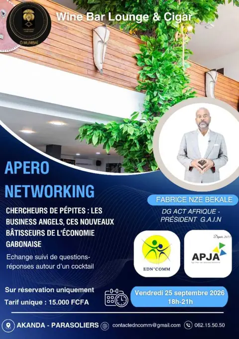
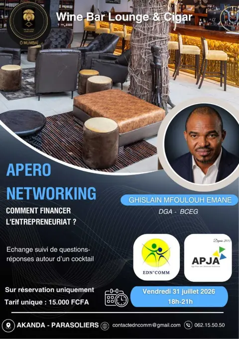
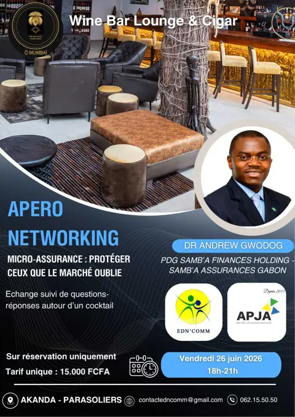
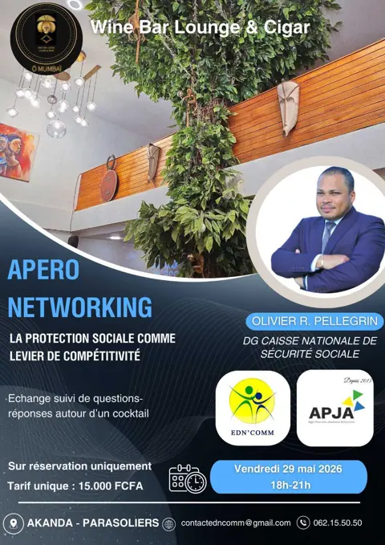
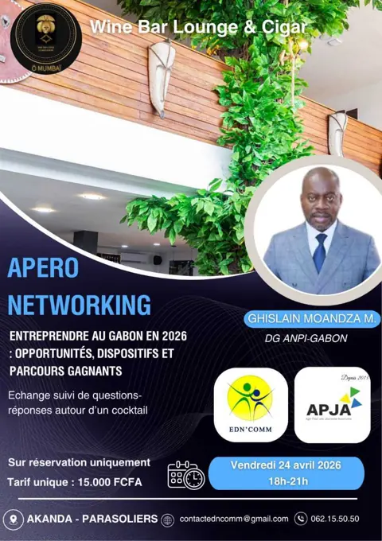
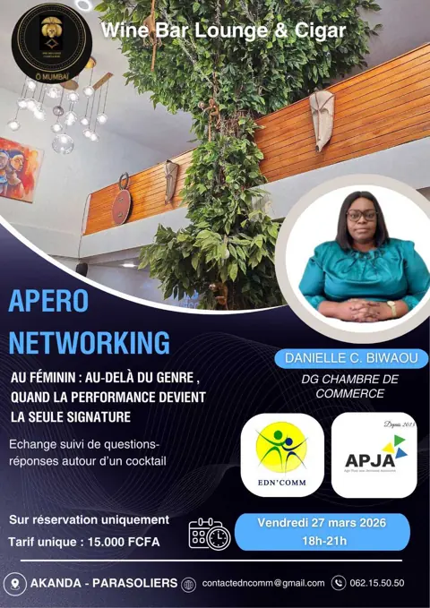
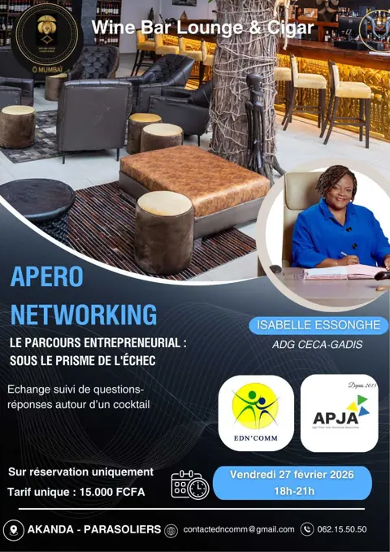
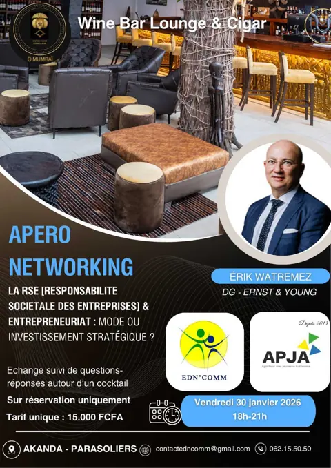

Accueil / Événements / Apéro Networking
Apéro Networking
Chaque mois, un dirigeant de premier plan partage son parcours avec les entrepreneurs de demain, autour d'un cocktail.
L'Apéro Networking est le rendez-vous mensuel de l'APJA, organisé en partenariat avec EDN'COMM. Le dernier vendredi du mois, un décideur reconnu de l'économie gabonaise (directeur général, chef d'entreprise, responsable d'institution) vient échanger sans détour sur un thème clé de l'entrepreneuriat : financement, protection sociale, investissement, RSE, échec, leadership au féminin…
Après son intervention, la parole est à la salle pour une séance de questions-réponses, puis la soirée se prolonge en networking autour d'un cocktail.
Pour qui ?
Entrepreneurs, porteurs de projets, jeunes actifs et étudiants qui veulent apprendre directement de ceux qui font l'économie gabonaise, de leurs réussites comme de leurs échecs, et élargir leur réseau.
Les éditions 2026
Vendredi 30 octobre 2026
Loïc KAPITHO
Directeur Général – POZI
« Think big, change fast ! Oser voir grand : comment faire grandir une startup gabonaise »

Vendredi 25 septembre 2026
Fabrice NZE BEKALE
DG ACT Afrique – Président G.A.I.N
« Chercheurs de pépites : les business angels, ces nouveaux bâtisseurs de l'économie gabonaise »

Vendredi 31 juillet 2026
Ghislain MFOULOUH EMANE
DGA – BCEG
« Comment financer l'entrepreneuriat ? »

Vendredi 26 juin 2026
Dr Andrew GWODOG
PDG Samb'a Finances Holding – Samb'a Assurances Gabon
« Micro-assurance : protéger ceux que le marché oublie »

Vendredi 29 mai 2026
Olivier R. PELLEGRIN
DG Caisse Nationale de Sécurité Sociale
« La protection sociale comme levier de compétitivité »

Vendredi 24 avril 2026
Ghislain MOANDZA M.
DG ANPI-Gabon
« Entreprendre au Gabon en 2026 : opportunités, dispositifs et parcours gagnants »

Vendredi 27 mars 2026
Danielle C. BIWAOU
DG Chambre de Commerce
« Au féminin : au-delà du genre, quand la performance devient la seule signature »

Vendredi 27 février 2026
Isabelle ESSONGHE
ADG CECA-GADIS
« Le parcours entrepreneurial : sous le prisme de l'échec »

Vendredi 30 janvier 2026
Érik WATREMEZ
DG – Ernst & Young
« La RSE (Responsabilité Sociétale des Entreprises) & entrepreneuriat : mode ou investissement stratégique ? »